Алгоритм Еллера
Суть алгоритму
Що це таке?
Алгоритм еллера — це алгоритм для генерації ідеальних лабіринтів. Ідеальними лабіринтами називають такі, які не мають закритих областей (таких в які не можна потрапити з іншої частини лабіринту) та циклів (тобто, між будь-якими двома точками є лише один можливий шлях).
Як працює алгоритм
Алгоритм створює лабіринт рядок за рядком. Для кожної клітинки потрібно знати, чи має вона стінку знизу та стінку справа, а також групу, до якої вона належить. Про стінки зліва та зверху знати не потрібно, так як верхня стінка - це нижня стінка клітинки вище й ліва стінка - це права для лівої клітинки відповідно. Для найвищих та найлівіших клітинок ми приймемо, що всі вони мають стінки зверху та зліва.
Спершу, створімо перший ряд, і назначмо кожній клітинці в ньому свою унікальну групу:
 Після цього, рухаючись з ліва на право, розмістімо стінки справа.
Для кожної пари клітинок ми можемо прийняти рішення, ставити там стінку чи ні.
Якщо ми вирішили не ставити стінку між клітинками, то повинні об'єднати їх групи.
Для останної клітинки ми зобор'язані поставити стінку справа:
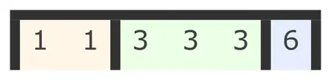
Тепер, розставімо нижні стінки.
Кожна група повинна мати хоч одну дірку знизу, інакше утвориться закрита зона:
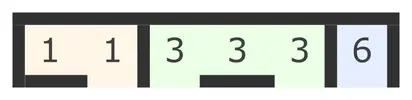
Після цього зкопіюймо групи до нижнього ряду, але лише там де клітинки не мають стінок знизу:
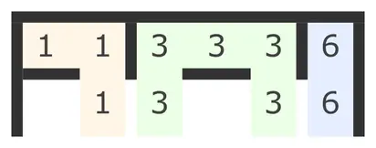
Тим же клітинкам, які залишились назначмо нові групи:
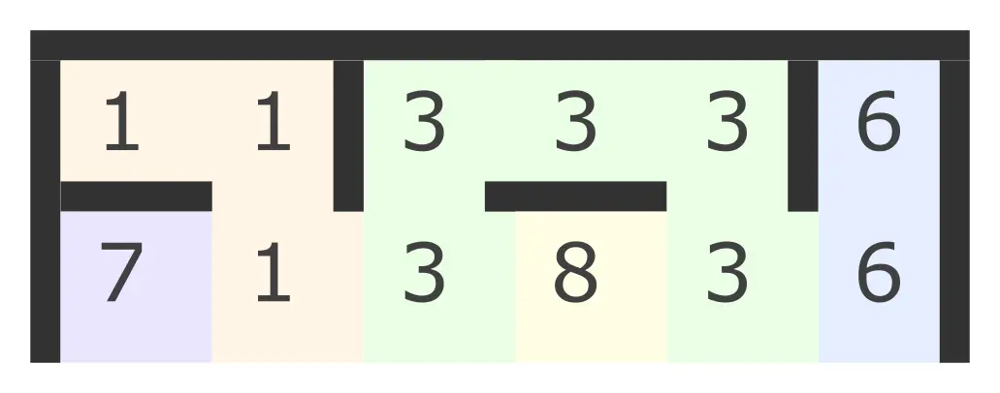
Після цього, як і в пепередньому рядку, знову розставімо стінки справа.
І якщо дві сусідні клітинки мають різні групи, то ми або можемо поставити між ними стінку:
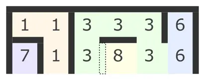
або можемо об'єднати їх в одну групу:
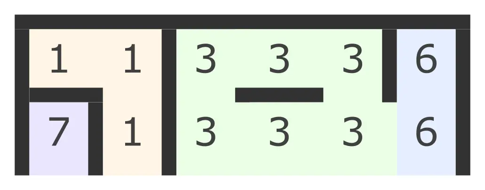
Якщо ж сусідні клітинки належать до однієї групи:
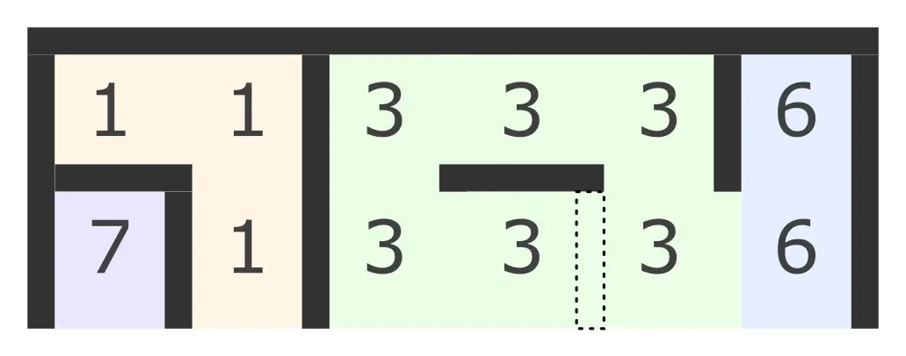
то ми зобов'язані поставити між ними стінку, щоб в лабіринті ну утворився цикл:
Після цього, рухаючись з ліва на право, розмістімо стінки справа.
Для кожної пари клітинок ми можемо прийняти рішення, ставити там стінку чи ні.
Якщо ми вирішили не ставити стінку між клітинками, то повинні об'єднати їх групи.
Для останної клітинки ми зобор'язані поставити стінку справа:
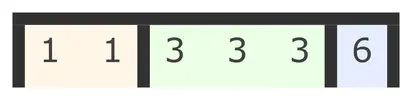
Тепер, розставімо нижні стінки.
Кожна група повинна мати хоч одну дірку знизу, інакше утвориться закрита зона:
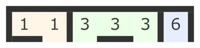
Після цього зкопіюймо групи до нижнього ряду, але лише там де клітинки не мають стінок знизу:
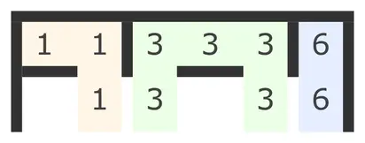
Тим же клітинкам, які залишились назначмо нові групи:
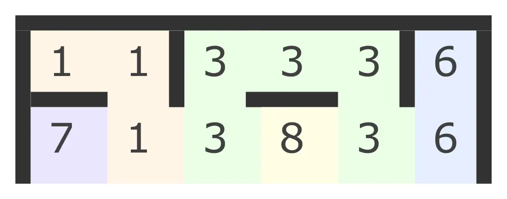
Після цього, як і в пепередньому рядку, знову розставімо стінки справа.
І якщо дві сусідні клітинки мають різні групи, то ми або можемо поставити між ними стінку:
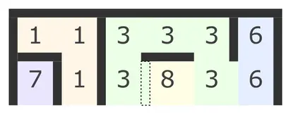
або можемо об'єднати їх в одну групу:
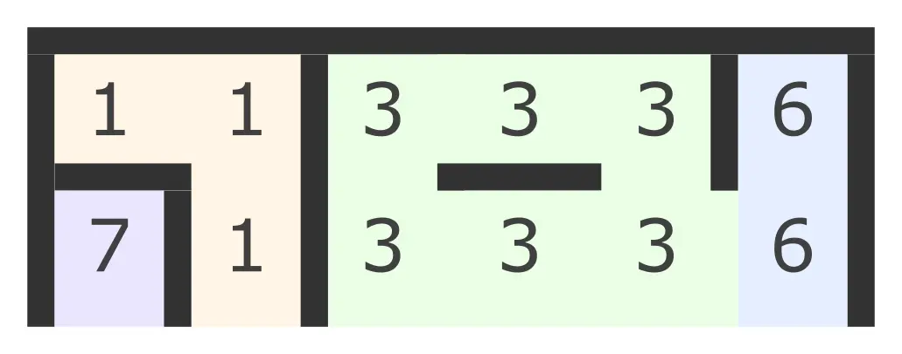
Якщо ж сусідні клітинки належать до однієї групи:
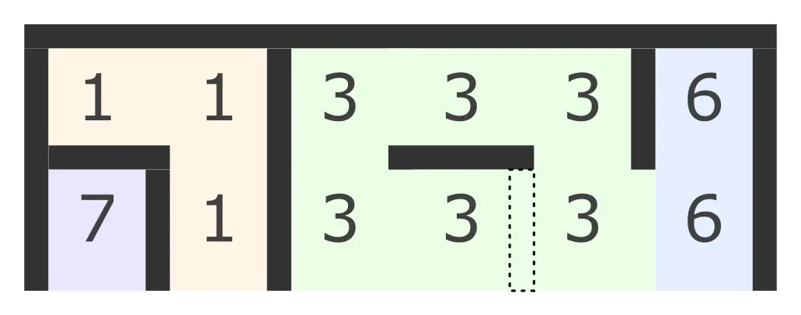
то ми зобов'язані поставити між ними стінку, щоб в лабіринті ну утворився цикл:
 Після цього нам знову потрібно розставити нижні стінки.
Не забувайте, що кожна група повинна мати хоч одну дірку знизу:
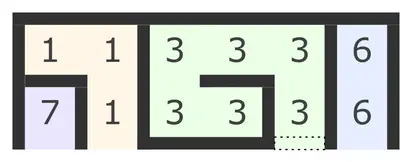
Також, візьміть до уваги, якщо ми хочемо об'єднати дві групи потрібно змінити групу у всіх клітинках
які належать до групи яку ми хочемо приєднати.
На відміну від того, що показано на зображенні вам не потрібно змінювати групи в попередніх рядках.
Проте потрібно змінити всі клітинки в ряді з яким ми зараз працюємо.
Себто, якби в третьому рядку було декілька клітинок першої групи,
ми повинні були б приєднати їх усіх до сьомої:
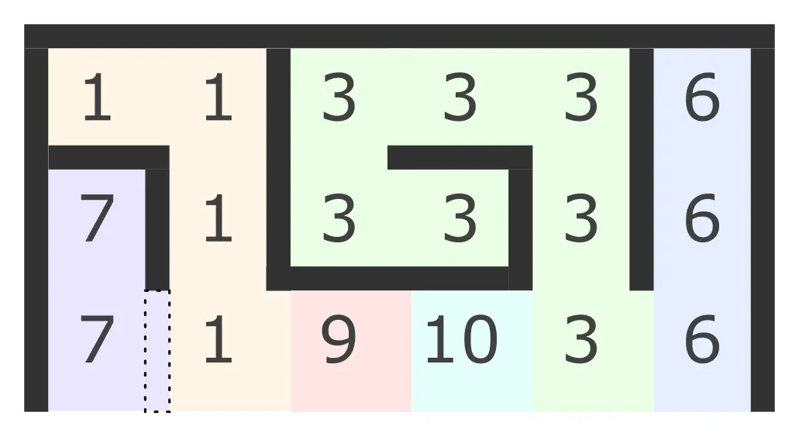
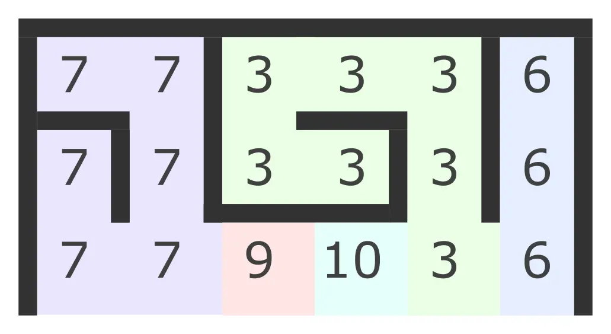
Таким чином ми можемо продовжувати безкінечно, додаючи нові ряди:
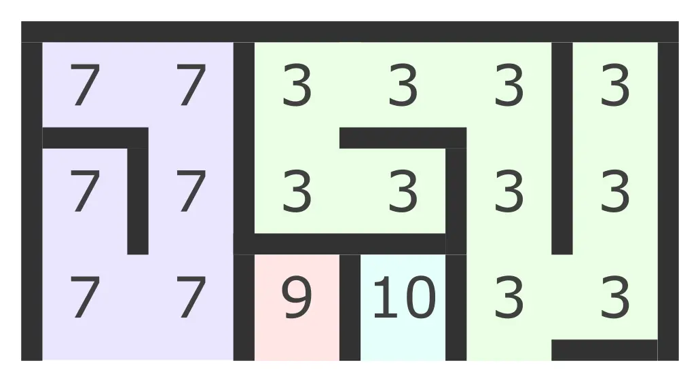
Якщо ж ми хочемо закінчити лабіринт,
то тепер, в останньому рядку, ми повинні завжди об'єднувати дві сусідні групи, якщо вони різні.
Та завжди ставити між клітинками стінку якщо їх групи однакові:
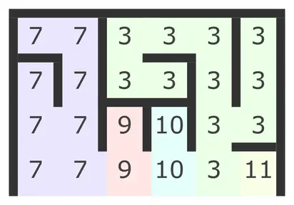
Так як нижній ряд останній в лабіринті, кожна клітинка в ньому повинна мати стінку знизу:
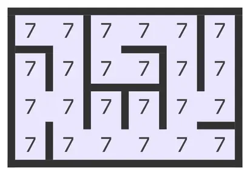
Після цього нам знову потрібно розставити нижні стінки.
Не забувайте, що кожна група повинна мати хоч одну дірку знизу:
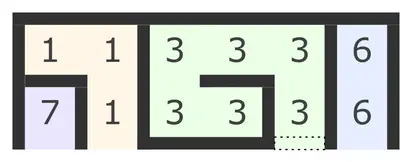
Також, візьміть до уваги, якщо ми хочемо об'єднати дві групи потрібно змінити групу у всіх клітинках
які належать до групи яку ми хочемо приєднати.
На відміну від того, що показано на зображенні вам не потрібно змінювати групи в попередніх рядках.
Проте потрібно змінити всі клітинки в ряді з яким ми зараз працюємо.
Себто, якби в третьому рядку було декілька клітинок першої групи,
ми повинні були б приєднати їх усіх до сьомої:
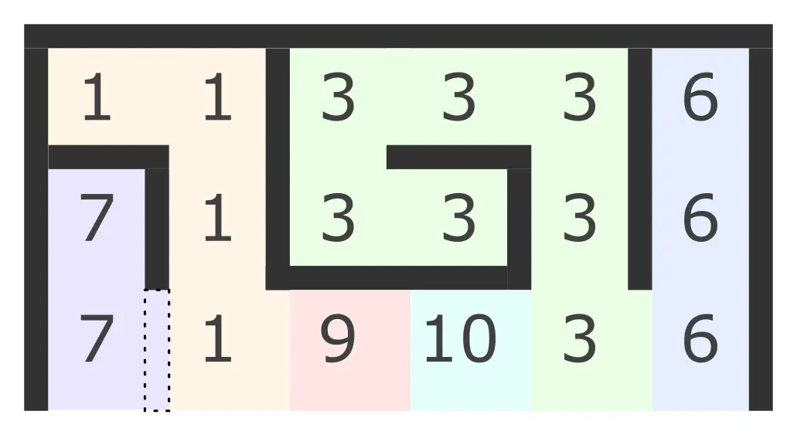
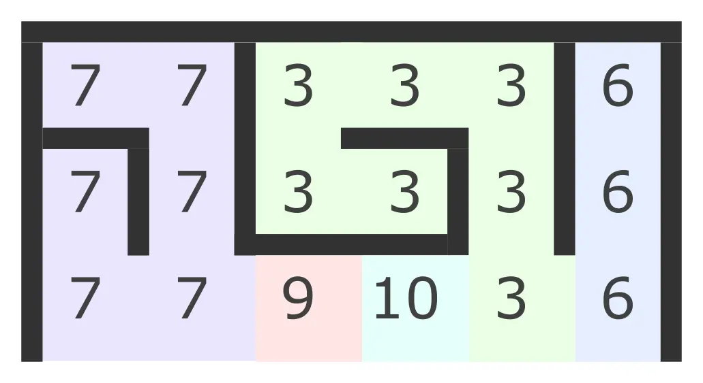
Таким чином ми можемо продовжувати безкінечно, додаючи нові ряди:
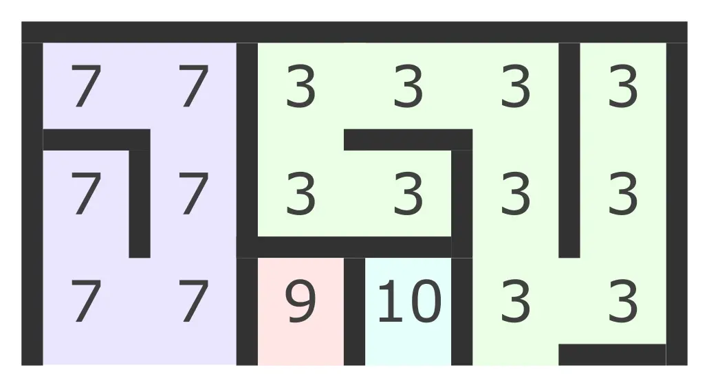
Якщо ж ми хочемо закінчити лабіринт,
то тепер, в останньому рядку, ми повинні завжди об'єднувати дві сусідні групи, якщо вони різні.
Та завжди ставити між клітинками стінку якщо їх групи однакові:
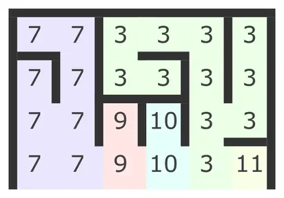
Так як нижній ряд останній в лабіринті, кожна клітинка в ньому повинна мати стінку знизу:
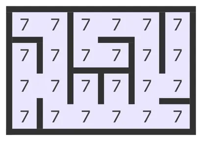
Реалізація
Ось моя реалізація алгоритму на мові GDscript:
func eller(rows: int, cols: int) -> Array:
var maze = create_array2D(rows, cols)
var free_group = 0
for i in rows:
var row = maze[i]
# Спершу, потрібно заповнити ряд групами
if i == 0: # Якщо це перший рядок: зоповнити його повністю новими значеннями
for j in cols:
row[j].group = free_group
free_group += 1
else: # Інакше, копіювати групи з попереднього рядка там, де немає нижньої стінки.
for j in cols:
if maze[i - 1][j].has_bottom_wall:
row[j].group = free_group
free_group += 1
else: # Клітинки, які залишились, заповнити новими групами
row[j].group = maze[i - 1][j].group
# Потім - додати бокові стінки
for j in cols:
# Додати стінку якщо:
# це остання клітинка
# АБО наступна клітинка має таку ж групу
# АБО випадково ПРИ УМОВІ що це не останній рядок
if j == cols - 1 || row[j].group == row[j + 1].group || (i < rows - 1 && deside()):
row[j].has_right_wall = true
else:
var target_group = row[j + 1].group
for x in cols:
if row[x].group == target_group:
row[x].group = row[j].group
# І додати стінки знизу
if i < rows - 1:
for j in cols:
if row[j].has_right_wall:
var group_has_hole = false
for x in j:
if row[x].has_bottom_wall == false && row[x].group == row[j].group:
group_has_hole = true
row[j].has_bottom_wall = deside() if group_has_hole else false
group_has_hole = false
elif deside():
row[j].has_bottom_wall = true
else:
for j in cols:
row[j].has_bottom_wall = true
return maze
У цьому коді, клітинка лабіринту описується ось таким класом:
class MazeCell:
extends Reference
export var group : int
export var has_bottom_wall : bool
export var has_right_wall : bool
Окрім цього, я використовую дві прості функції.
Одна, повертає значення true з імовірністю 50%:
func deside() -> bool:
return randf() > 0.5
А інша - займається створенням масиву масивів клітинок, який і буде нашим лабіринтом:
func create_array2D(rows: int, cols: int) -> Array:
var arr = []
for i in rows:
arr.append([])
for j in cols:
arr[i].append(MazeCell.new())
return arr
Висновок
Алгоритм еллера створює лабіринти високої якості. Ось декілька прикладів:
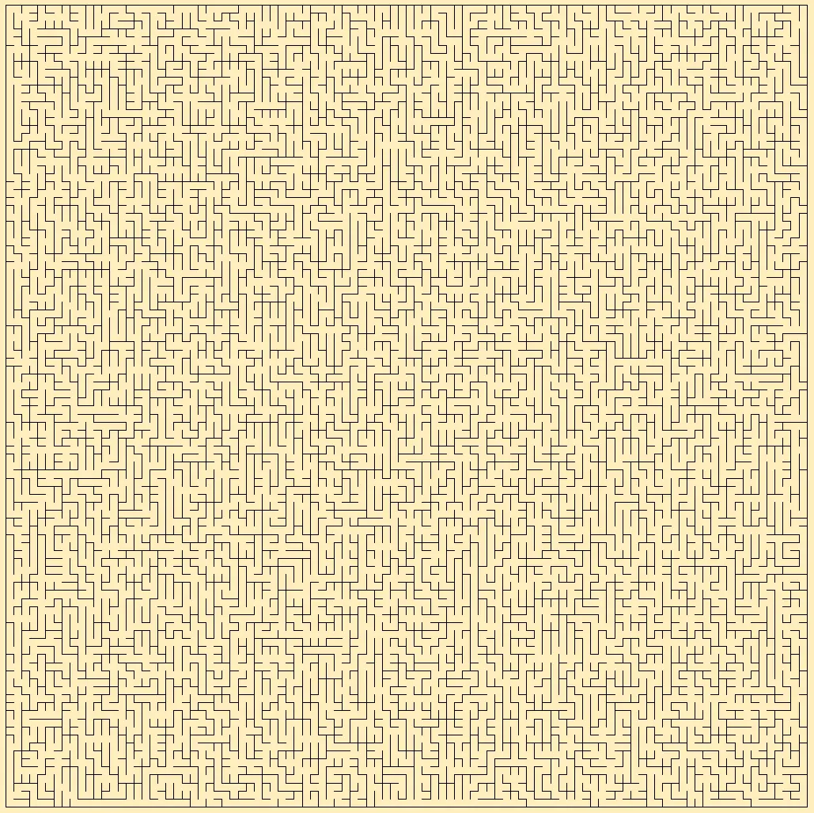 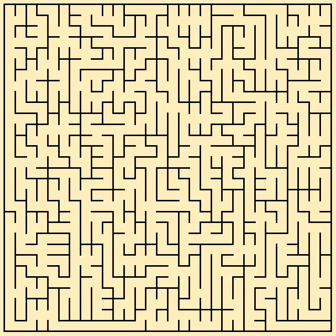
Алгоритм працює досить швидко, а створені ним лабіринти не мають всіляких артефактів чи очевидних шляхів. Також, так як для роботи алгоритму потрібно знати лише попередній ряд, алгоритм підходить для створення безкінечних лабіринтів. Принаймні, безкінечних в одному напрямку. Таким чином можна, на приклад, зробити генерацію безконечного підземелля для гри платформера. Також, можна генерувати нові рядки в обидва боки, тоді лабіринт буде повністю безконечним по-вертикалі. Або, зробити радіальний лабіринт, де замість рядків будуть генеруватись кільця. Тоді лабіринт буде нескінченним у всіх напрямках.